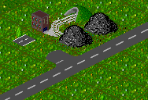
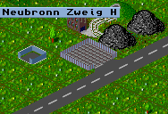

Frachthöfe können nur auf den Enden eigener Straßen gebaut werden. Im linken Bild ist z.B. neben dem Kohlebergwerk eine kleine Sackgasse zu erkennen die sich als Einfahrt in einen Frachthof sehr gut eignen würde. Um einen Frachthof zu bauen genügt es nun, das Ende der Sackgasse mit dem Frachthofsbauwerkzeug anzuklicken, und das Programm baut einen Frachthof, wie auf dem rechten Bild dargestellt.
|  |  |